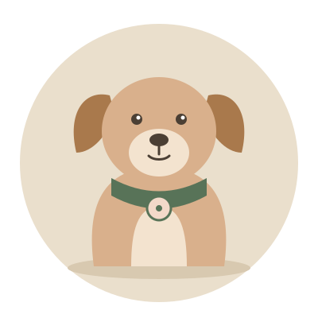
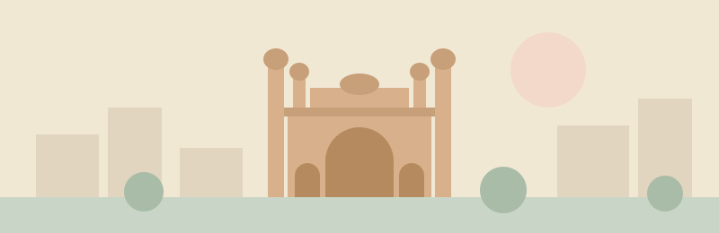

Know your pet is happy, fed and safe, from anywhere.
Pawsense is a gentle smart collar built for life of a pet: hot afternoons, busy lanes and sudden monsoon showers. It shows you where your pet is, how they’re feeling and when it’s time for their next meal.
Shop the collarSee features
Cookie’s day
Sample data. Activity goal 72% done.

Made for pets who live anywhere in the wolrd
For instance, Hyderabad is a wonderful city for pets and a demanding one. Summer afternoons often cross 40°C, monsoon rain arrives without warning, and one open gate on a busy lane is all it takes for a curious pet to wander. Pawsense was designed around those everyday worries.
Heat awareness
When it gets too hot for a long walk, you get a gentle nudge to head for shade and water.
Safe zones
Draw a circle around your apartment, your lane, the park or the groomer, and get an alert if your pet leaves it.
Splash-ready
A water-resistant shell handles rain, puddles and bath time.
Set up in an evening
No technical know-how needed. If you can pair a pair of earbuds, you can set up Pawsense.
Fit the collar
Pick a size, adjust the soft band and charge the collar overnight on its dock.
Connect your phone
Add your pet’s name and details, then set safe zones such as home, the park or your daily walking route.
Relax
Check in whenever you like. We’ll only message you when something needs your attention.
Everything you wonder about, in one place
Live GPS tracking
See where your pet is right now, from the lake path to the lift lobby.
Health monitoring
Notice changes in heart rate and rest early, so small worries stay small.
Hunger detection
Know when mealtime is near, so no bowl is ever left empty.
Activity analytics
Follow walks, play and naps through simple daily and weekly views.

Popular with Hyderabad pet parents
What pet parents say
Snow used to slip out the moment the lift door opened. Now I get an alert before he reaches the gate.
Ananya, Banjara Hills
The heat reminders are surprisingly useful in May. We moved our walks to early mornings and he’s much happier.
Rahul, Madhapur
Our vet loved the weekly health report. It made check-ups so much easier.
Fatima, Secunderabad
Sample reviews for design purposes.
Questions, answered
Does it work across the city?
Yes. GPS works outdoors across the city. Inside basements and some tall buildings, the location may be less precise.
How long does the battery last?
About five days on a single charge. Pop it on the dock overnight and it’s ready by morning.
Is it water-resistant?
Yes. It handles rain, puddles and bath time. Please don’t keep it submerged for long.
Is it safe for cats and small dogs?
Yes. The Small size is made for cats and small dogs, and the soft band is gentle on fur.
How fast is delivery?
1 to 2 working days within Hyderabad, 3 to 5 working days across India and 14+ days for international.